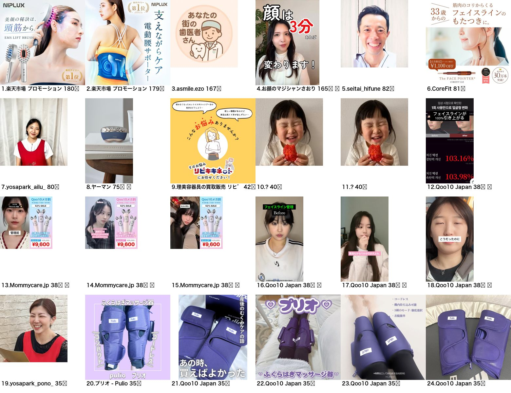
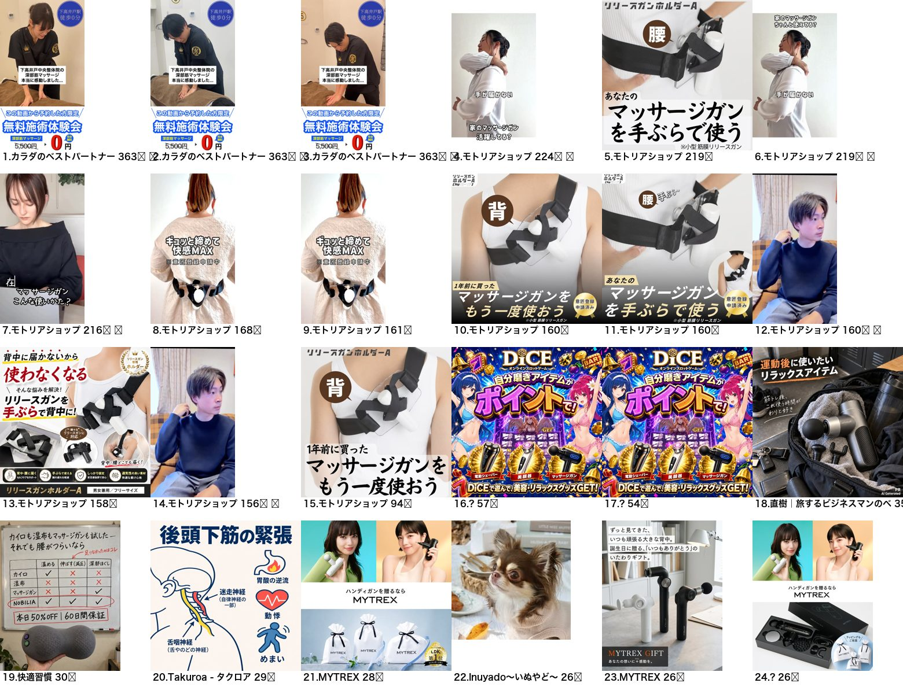
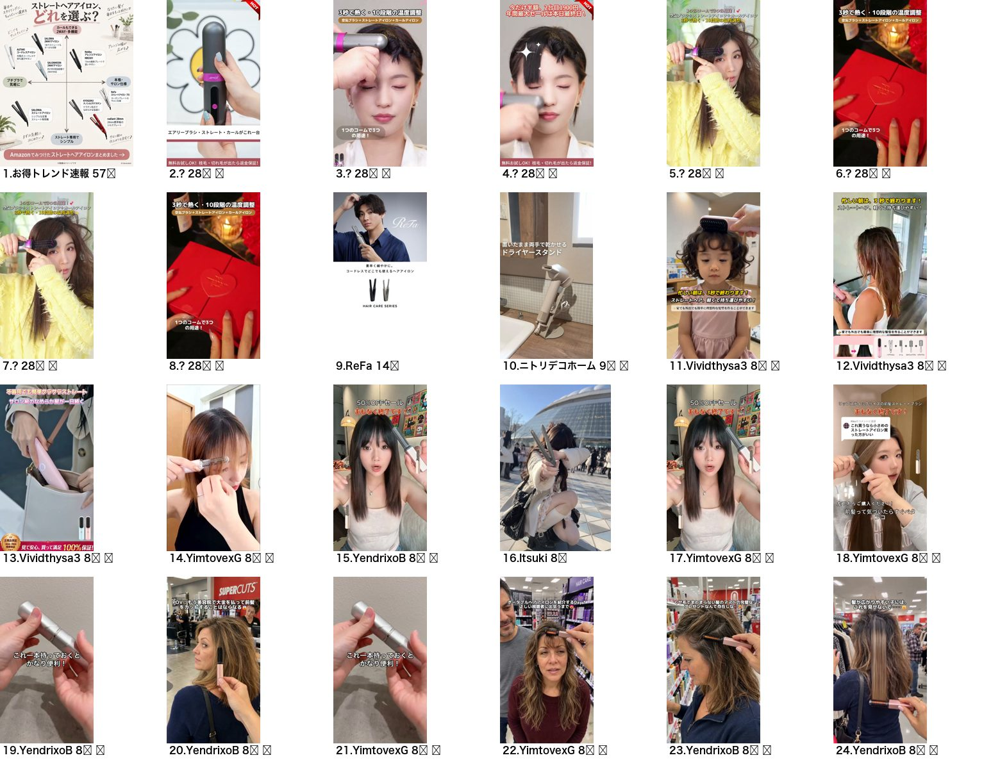
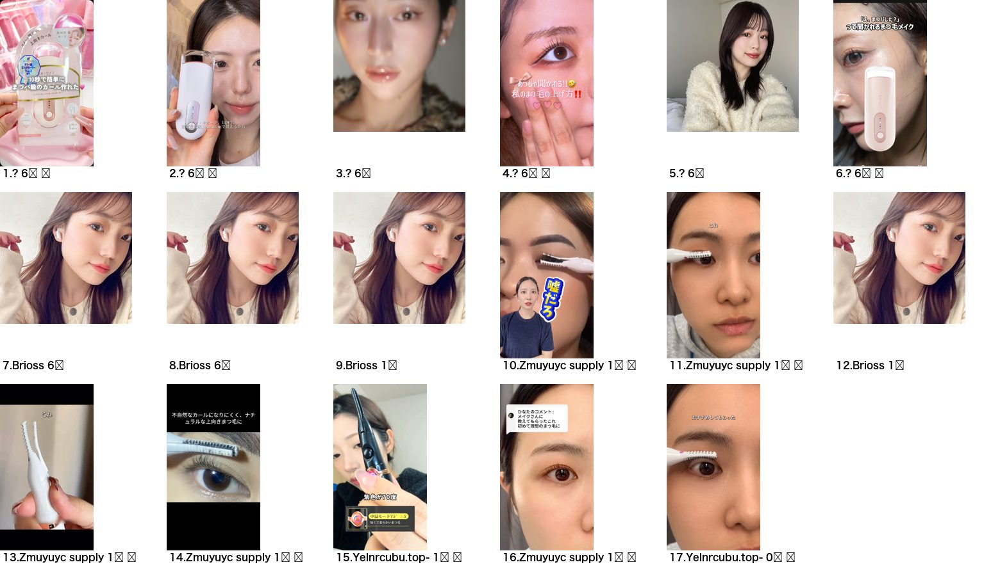
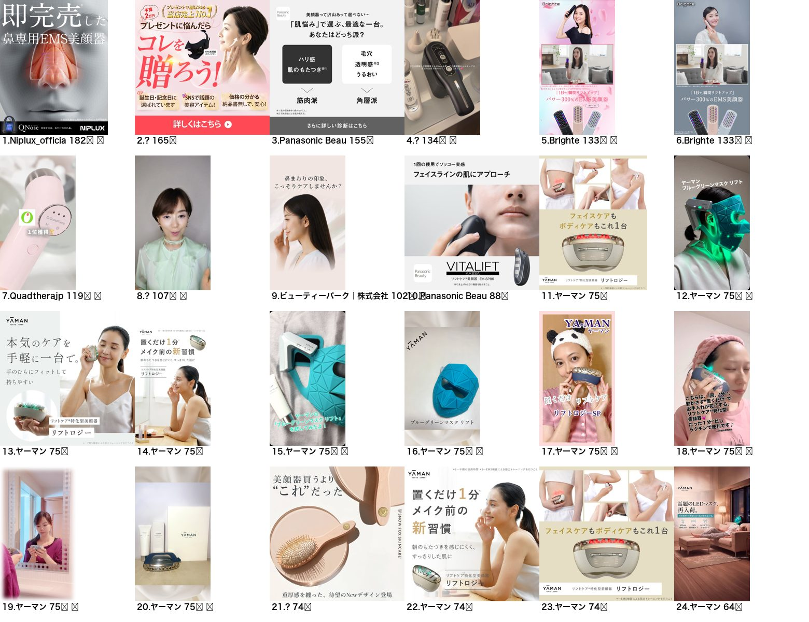
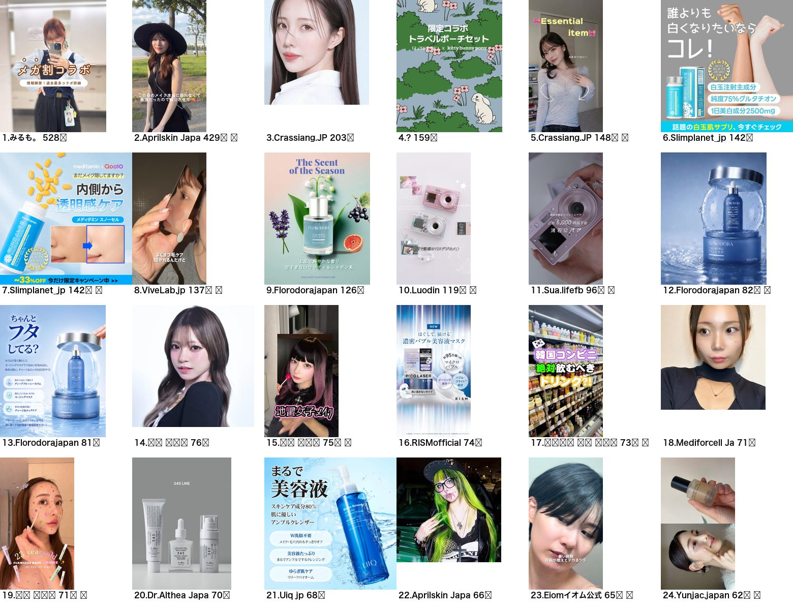
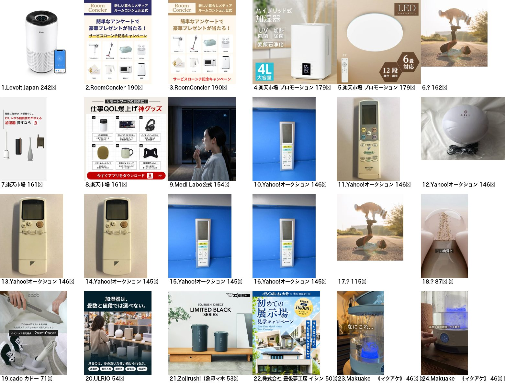
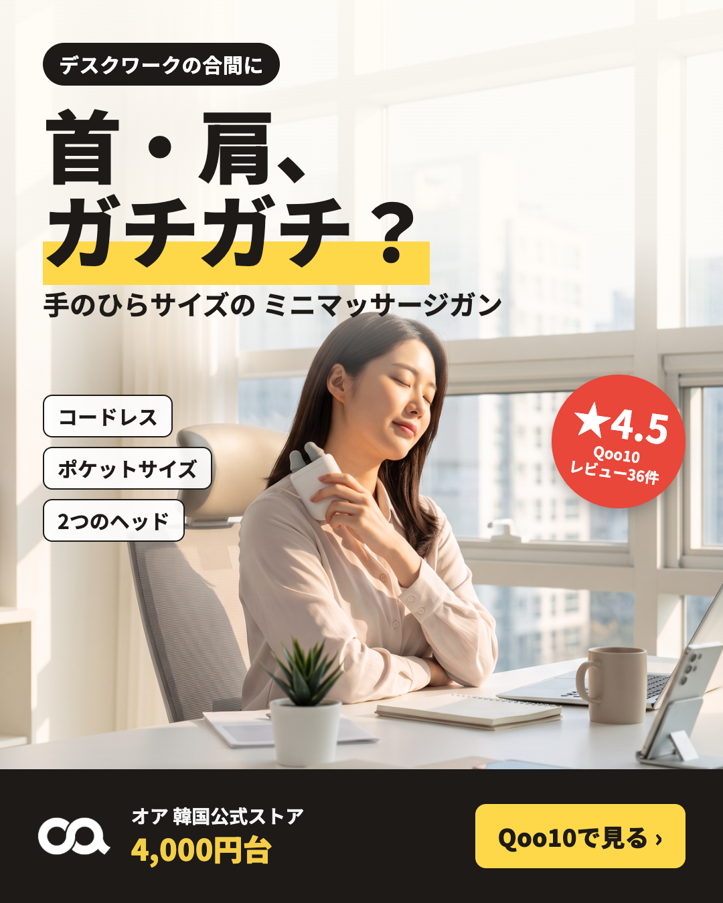

메타 광고 라이브러리(일본, 지금 게재 중)에서 우리 제품군 검색어 13개로 727건을 모았습니다. 살롱·클리닉 광고를 빼고 제품 판매 광고만 봤습니다. 우리가 만든 1안(한국식 DA 배너)은 일본에서 오래 집행되는 광고들과 문법이 다릅니다.
| 검색어 | 광고 수 | 영상 | 인플루언서 계정 집행 | 30일+ 장기 집행 | 많이 쓰는 광고주 |
|---|---|---|---|---|---|
| マッサージガン | 55 | 14 | 2 | 21 | モトリアショップ 12 · MYTREX 8 |
| マッサージ器 | 83 | 34 | 3 | 28 | Qoo10 Japan 8 · プリオ 5 · Mommycare 3 |
| コードレスヘアアイロン | 80 | 70 | 1 | 1 | 중국계 직판 다수 · Qoo10 Japan 4 · ReFa 3 |
| ヘアアイロン | 86 | 34 | 15 | 73 | 미용실·헤어오일 위주 |
| ホットビューラー | 17 | 11 | 4 | 0 | Brioss · 중국계 직판 |
| 美顔器 | 79 | 39 | 13 | 48 | ヤーマン 20 · SALONIA 15 · Panasonic 7 |
| 加湿器 | 89 | 33 | 11 | 35 | cado 7 · Carepod(한국) 7 · 楽天 |
| Qoo10 メガ割 | 75 | 34 | 26 | 44 | 한국 화장품(Torriden 13 등) · Qoo10 Japan 10 |
| 口腔洗浄器 | 2 | 0 | 0 | 0 | 거의 없음 → 빈 시장 |
"인플루언서 계정 집행" = 일본 인플루언서 계정 이름으로 나가는 브랜드 협업 광고(파트너십 광고). "30일+" = 30일 넘게 계속 켜져 있는 광고(돈이 되니까 안 끄는 광고).
광고주가 「Qoo10 Japan」인 광고가 23건. 셀러 상품을 큐텐 공식 계정으로 광고합니다.
→ 담당 MD가 말한 "외부광고"가 이 큐텐 공식 계정 메타 광고(셀러 비용 부담)일 가능성이 큽니다. 동욱님 통해 "큐텐 공식 계정 메타 광고 상품이 있는지, 비용·소재 조건"을 꼭 물어봐야 합니다. 우리가 직접 돌리는 것보다 큐텐 계정이 더 믿음이 가고, 메가와리 선정에도 바로 연결됩니다.

マッサージ器 — 12~18·21~24번이 Qoo10 Japan 집행(한국 브랜드 미용기기·프리오 마사지기). 숫자 = 집행 일수.

マッサージガン — 모트리아숍(4~15번) 160~224일 장기 집행: 실사 사진 + 짧은 고민 문장. MYTREX는 선물 프레임.

コードレスヘアアイロン — 거의 전부 세로 영상. 앞머리에 대는 장면 + 자막.

ホットビューラー — 얼굴 클로즈업 셀카 + 눈가 사용 장면.

美顔器 — ヤーマン: 명조 2줄 + 하이키 실사. 기능을 "습관·시간"으로 말함.

Qoo10 メガ割 — 한국 화장품이 일본 인플루언서 얼굴로 집행(26/75건). 「メガ割コラボ」.

加湿器 — Carepod(한국)·cado: 제품 단독 하이키 + 짧은 카피.

공통 규칙: 효과 표현 금지(코리·피로회복 ✕, 약기법), 실제 숫자만(★4.5·36건), 날짜·증정 문구 ✕. 영상은 Comfy 시댄스로 5~8초 생성 가능.
출처: Meta 광고 라이브러리(country=JP, 게재 중, 2026-11-10 17:30 수집). 광고 카드 전체(🇯🇵 검색어별 657건)는 대시보드 소재 탭 「타사 광고 모니터」에서 볼 수 있습니다.